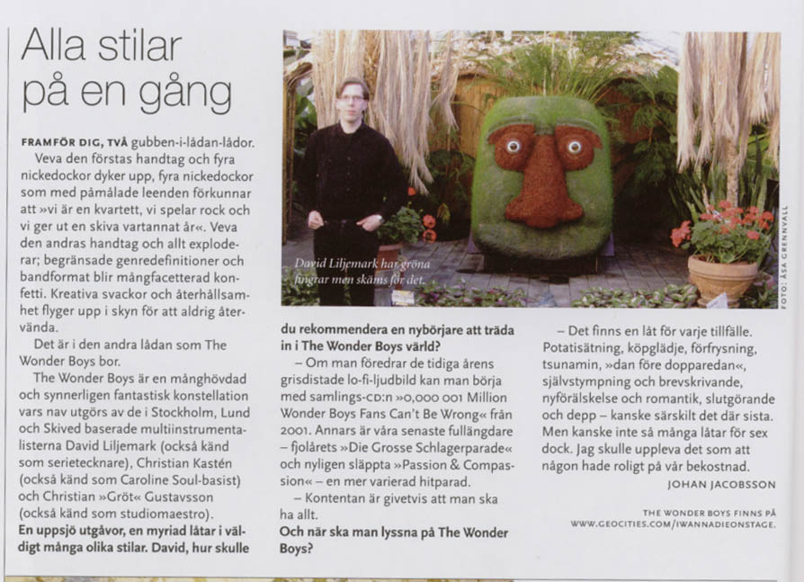

The Wonder Boys
news

rough translation:
All styles at once
In front of you, two jack-in-the-box boxes.
Turn the handle of the first one, and for yes men with painted
smiles appear, proclaiming “we are a quartet, we play rock and we release
an album every two years”. Turn the handle of the other one, and everything
explodes; limiting genre definitions and band formats turns into a confetti
rain of nuances. Creative lows and restraints fly up in the sky, never to return.
The Wonder Boys live in that second box.
The Wonder Boys is a many-headed and extraordinarily fantastic
constellation, whose hub consists of the Stockholm-, Lund- and Skived-based
multi-instrumentalists David Liljemark (also known as comics artist), Christian
Kastén (also known as Caroline Soul’s bass player) and Christian
“Gröt” Gustavsson (also known as studio maestro).
An abundance of releases, a myriad of songs in a lot of different styles.
David, how would you recommend a beginner to enter The Wonder Boys’ world?
-If you prefer the early years’ pig-distorted lo-fi-sound,
you can start with the collection cd “0,000 001 Million Wonder Boys Fans
Can’t Be Wrong” from 2001. Otherwise, our latest full length releases
– last year’s “Die grosse Schlagerparade” and recently
released “Passion & Compassion” – are more varied hit
parades.
-The gist of it is of course that you should have everything.
And when should one listen to The Wonder Boys?
-There’s a song for every occasion. For potatoe eating,
shopping sprees, being frost-bitten, the tsunami, the day before Christmas,
self mutilation and letter writing, romance and being in love, breaking up and
being down in the dumps – maybe the latter in particular. But maybe not
so many songs for having sex though. It would feel like someone had fun at our
expence.
Johan Jacobsson
The Wonder Boys are at
www.geocities.com/iwannadieonstage
Photo: Åsa Grennvall.
Picture byline: David has green fingers, but is ashamed of them.
From Sonic #29, june 2006.